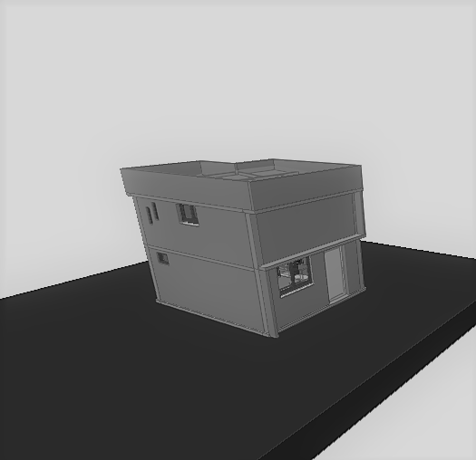

Une culture de la construction transmise sur le terrain, complétée par la formation technique et aujourd'hui prolongée par la conception numérique.
Mon histoire avec la construction a commencé sur le terrain, aux côtés de mon père maçon. Dès mon plus jeune âge, j'ai appris le métier dans la poussière du chantier, en observant les gestes, en touchant la matière et en comprenant de manière instinctive ce qu'implique bâtir de ses mains.
C'est cette passion du terrain qui m'a naturellement orienté vers des études en Génie Civil (DTS). Pour compléter mon approche pratique par une rigueur scientifique, j'ai ensuite effectué un stage en laboratoire de matériaux.
Aujourd'hui dessinateur-projeteur, je conçois des plans sur AutoCAD et des maquettes numériques sous Revit. Mais là où d'autres ne voient que des lignes sur un écran, je vois des mètres cubes de béton, des assemblages réels et des équipes à l'œuvre.
Une culture du chantier transmise dès l'enfance, affinée par la pratique de la maçonnerie et des VRD.
Une formation solide en Génie Civil (DTS) et une maîtrise des matériaux validée en laboratoire.
La maîtrise d'AutoCAD et Revit, au service d'une modélisation rigoureuse et orientée BIM.
Des esquisses initiales au modèle Revit, puis des fondations jusqu'au dernier coup de marteau, ce projet incarne la volonté de lier l'idée, le plan et la réalité du chantier.
